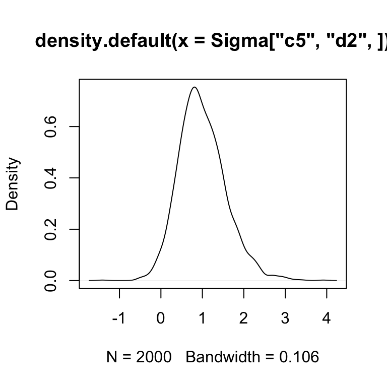

The Teacup Cerberus Model is very simple. It is essentially just estimating covariation within and between two datasets that have multinomial variation while propogating uncertainty due to count variation into the estimates of covariation. Note: its called Teacup Cerberus because its a simplified version of a model (called Cerberus) that I will eventually put into the stray package.
Assume we have two datasets \(Y^{(1)}\) (e.g., 16S Microbiome sequencing) and \(Y^{(2)}\) (e.g., paired bulk RNA-seq samples). We measure counts but want to look at correlations between log-ratios (in particular CLR coordinates). We therefore have uncertainty in our estimates of relative abundances (and therfore log-ratios) due to count variation. We can model this uncertainty using a simple multinomial dirichlet model. \[ \begin{align} Y_i^{(1)} &\sim \text{Multinomial}(\pi^{(1)}_i) \\ Y_i^{(2)} &\sim \text{Multinomial}(\pi^{(2)}_i) \\ \pi^{(1)}_i &\sim \text{Dirichlet}(\alpha^{(1)}) \\ \pi^{(2)}_i &\sim \text{Dirichlet}(\alpha^{(2)}). \end{align} \] Which has a posterior of \[ \begin{align} \pi^{(1)}_i | Y^{(1)}_i &\sim \text{Dirichlet}(\alpha^{(1)} + Y^{(1)}_i) \\ \pi^{(2)}_i | Y_i^{(2)} &\sim \text{Dirichlet}(\alpha^{(2)}+Y^{(2)}_i). \end{align} \] We can therefore draw posterior samples directly from the posterior of this model. Denote \(s\)-th posterior samples of the \(i\)-th observation as \(\pi^{(1)s}_i\) and \(\pi^{(2)s}_i\) respectively. If we collect enough samples from the posterior we can obtain an estimate of our uncertainty, each posterior sample representing one posible true value of the relative abundances \(\pi^{(1)}_i\) and \(\pi^{(2)}_i\). For each posterior sample we can then calculate the correlation within and between the two datasets in the CLR coordinates as follows: \[ \begin{align} \eta^{(1)s}_i &= \text{CLR}(\pi^{(1)s}_i) \\ \eta^{(2)s}_i &= \text{CLR}(\pi^{(2)s}_i) \\ \Sigma_s &= \text{corr}\left(\begin{bmatrix} \eta^{(1)s} \\ \eta^{(2)s} \end{bmatrix}\right) \end{align} \] We then have posterior samples of the correlation matrix, each sample \(\Sigma^s\) has the following form: \[ \Sigma_s = \begin{bmatrix} \Sigma_s^{(1,1)} & \Sigma_s^{(1,2)} \\ \Sigma_s^{(2,1)} & \Sigma_s^{(2,2)} \end{bmatrix} \] where \(\Sigma_s^{(1,1)}\) represents the correlation between CLR coordinates in the first dataset, \(\Sigma_s^{(2,2)}\) represents the correlation between CLR coordinates in the second dataset, and \(\Sigma_s^{(1,2)}\) represents correlations cross correlations between CLR coordinates in the two datasets.
These posterior samples can then be investigated and summarised (e.g., for each element of the matrix \(\Sigma\)) the posterior mean and quantiles can be summarized across the samples. We can also easily compute other statistics e.g., covariation in other Log-ratio coordinates, proportionality, or the IQLR transformed covariance. Below I will go over a simple example of how to do these things using simulated data.
First lets simulate some random data. Lets say there are 10 “parts” (e.g., taxa) in the first dataset, 15 parts (e.g., genes) in the second and a total of 12 samples in each. Note it is important that these samples are paired, e.g., one sample in the first dataset corresponds to one sample in the second.
Lets look at the data we simulated:
sim$Y1 # the first dataset
#> s1 s2 s3 s4 s5 s6 s7 s8 s9 s10 s11 s12
#> c1 938 58 15 1982 39 228 293 55 86 352 2281 16
#> c2 3347 33 86 0 72 79 587 6 8 762 173 58
#> c3 53 9 411 55 131 224 19 5260 26 175 313 1369
#> c4 332 5857 5858 6921 4774 6106 1192 2503 5843 585 782 684
#> c5 169 15 22 50 1015 1 301 83 2 427 172 478
#> c6 588 25 10 11 936 109 3467 85 105 3941 637 5827
#> c7 129 36 57 8 26 10 15 613 2 194 309 4
#> c8 1167 775 16 3 175 46 372 49 0 133 2403 26
#> c9 675 29 8 5 12 39 6 28 1 506 66 322
#> c10 238 16 14 21 436 27 139 156 6 838 314 196
sim$Y2 # the second dataset
#> s1 s2 s3 s4 s5 s6 s7 s8 s9 s10 s11 s12
#> d1 11 0 362 4 0 0 62 0 49 88 0 0
#> d2 3 0 447 78 130 1 182 7 0 484 0 1
#> d3 216 0 4 22 304 0 34 5 2 683 0 0
#> d4 38 1 1074 4 47 0 43 56 11 90 0 0
#> d5 169 1 1029 5 354 0 84 55 24 29 0 0
#> d6 791 1 162 36 825 0 82 20 5 87 0 6
#> d7 31 0 1371 0 260 0 2 0 8 0 0 0
#> d8 39 0 49 0 183 0 34 73 32 17 0 0
#> d9 0 0 22 14 19 0 70 1 0 2 0 0
#> d10 17 236 791 24 785 0 560 1299 10 1297 0 2
#> d11 294 3 605 4 869 6 35 271 61 257 0 0
#> d12 2 0 260 5 26 0 82 338 1 211 0 0
#> d13 171 0 52 1 2 0 30 5 70 2 0 0
#> d14 6265 7833 591 9617 1775 5993 7454 4795 7631 5024 7740 9960
#> d15 28 0 767 0 74 0 66 12 7 56 0 1Note that the model assumes that the \(i\)-th row of Y1 is paired with the \(i\)-th row of Y2.
It is very easy to fit the Cerberus Teacup model.
# Choose priors
alpha1 <- rep(.5, D1)
alpha2 <- rep(.5, D2)
# Fit Model
Sigma <- teacup_cerberus(sim$Y1, sim$Y2, alpha1, alpha2)We can now look at inferred covariation between CLR coordinates. As a convenience, the function teacup_cerberus tries to use rownames in Y1 and Y2 to allow us to easily index within the returned Sigma. We can look at the posterior distribution of the covariance between part c1 in Y1 and d2 in Y2 as follows:
 So we see that most of the mass of the posterior is centered on positive values of \(Cov(c_1, d_2)\) suggesting the CLR cooridnates corresponding to these two things are positively correlated.
There are a number of different helpful representations that users may want to look at.
If you want to view the posterior over correlations rather than covariances just use the function sigma2cor.
Proportionality is a nice alternative to correlation/covariance when working with compositional data. If two CLR coordinates are proportional then it can be concluded that the taxa/genes represented by those CLR coordinates are infact correlated. This is not true when using normal correlation however. A good review of proportionality can be found in Lovell et al. (2015). Lovell et al. (2015) proposed \(\phi\) statistics as a measure of proportionality. The lower the value of \(\phi\) the more proportional two things are. \(\phi\) statistics can be calculated directly from Sigma using the function RcppCoDA::clrvar2phi as below
The IQLR transform (Wu et al. 2017) is a nice alternative for the CLR that deal with compositional asymetry. It’s a bit of a complicated transform, and I am not going to go into details here. What I will say is that when working with Microbiome data, the IQLR mahy be helpful when you want to pretend like your acctually measuring correlation between taxa rather than between “log-ratios”.
I imagine that many who use this package will be doing so to find “hits” parts in Y1 that are correlated to parts in Y2. teacup_cerberus outputs a posterior over covaraince matricies. So how do you get hits? Ideally we want to find those “hits” that correspond to cases where we are not only highly certainty that there is a non-zero covariance but also that the covariance is not neglibly non-zero; e.g., we want cases were we are highly certain the covariation is large. I like to use a statistic that I call ECDF(0) for this purpose. It essentially calculate the quantile corresponding to zero covariation from the empirical cumulative distribution function formed by posterior samples. Don’t worry if that doesn’t make sense. Essentially values of ECDF(0) close to 1 give suggest high certainty that the covariation is positive and values close to 0 give high certainty that the covariation is negative. Values near 0.5 refelct either that we have high certainty that there is no covariation or we are just extreemly uncertain regarding what the true covariation is. To make ECDF(0) useful for users of this package I have written the function filter_sigma_ecdf. Essentially you give a value of lambda and the function only returns hits where ECDF(0)>=lambda or ECDF(0) <= 1-lambda. It also ranks the output so the first rows correspond to the things we are most confident are large (positive or negative).
filter_sigma_ecdf(Sigma, 0.95, use_names=TRUE)
#> # A tibble: 186 x 3
#> # Groups: Coord1 [25]
#> Coord1 Coord2 ECDF0
#> <chr> <chr> <dbl>
#> 1 c1 c4 0
#> 2 c1 d10 1
#> 3 c1 d14 0
#> 4 c10 c5 0
#> 5 c10 c6 0
#> 6 c10 d3 0
#> 7 c2 c3 1
#> 8 c2 c4 1
#> 9 c2 c5 1
#> 10 c2 c6 0
#> # … with 176 more rowsThis is just an example of one way of interpreting / using output from teacup_cerberus. Note this filtering method would work well for Sigma.iqlr and Sigma (the later is in the CLR) because there the things that are “interesting” will have a posterior not centered about zero therefore we are looking for posteriors far from zero. However, for Sigma.phi we need a different tact because there we are just looking for hits that have values close to zero. Alternative approaches and summarizations can be easily chosen to summarize phi statistics (for example, look for those “hits” with the lowest posterior mean etc…).
The CLR, IQLR, and Phi statistics are really 3 ways of viewing the same posterior samples. I realize I have given users quite a few options here so here is some guidance. Lets say that you are looking for “hits” as I described above. I would likely start by looking at the Phi statistics. Any relationship between two parts (e.g., Phi close to zero) is strong evidence that the two parts are truely correlated in absolute abundance! Not just relative abundance! This is a huge advantage. So if I found some really strong signal with Phi statistics I would be most confident about the interpretation of my data. That siad, Phi statistics can miss true correlation because they are only looking for proportionality (which is a subset of all correlations that is valid with compositional data). So if I didn’t find anything with Phi statistics I would likely look with the IQLR. My personal experience and that of a few benchmarking studies has suggested that IQLR is better than CLR for things like this (where you want base scale inference). That said, because the IQLR lacks the theoretical underpinning I would use it with some skepticism. Last I would try the CLR and would have the most skepticism about those results.
Lovell, David, Vera Pawlowsky-Glahn, Juan José Egozcue, Samuel Marguerat, and Jürg Bähler. 2015. “Proportionality: A Valid Alternative to Correlation for Relative Data.” PLoS Computational Biology 11 (3). Public Library of Science: e1004075.
Wu, Jia R, Jean M Macklaim, Briana L Genge, and Gregory B Gloor. 2017. “Finding the Centre: Corrections for Asymmetry in High-Throughput Sequencing Datasets.” arXiv Preprint arXiv:1704.01841.